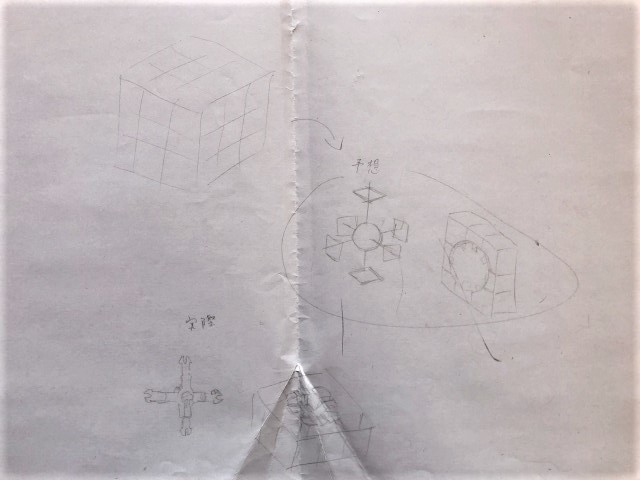
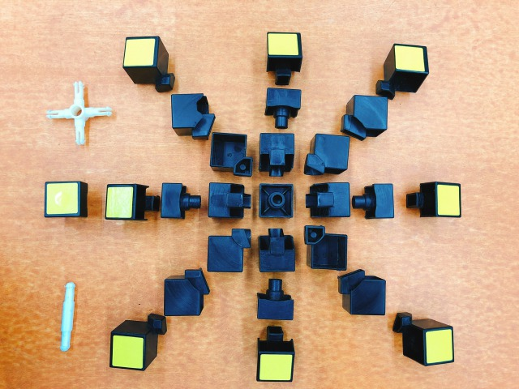

100均などのおもちゃで役に立たないおもちゃを作る
おもちゃをハッキングをする前におもちゃの構造を考えるおもちゃがどうできているのか考え中身を予想する。 その後実際におもちゃを分解し中身を見る。メモは私の予想と実際のルービックキューブの図。
画像は分解したルービックキューブ
役に立たないおもちゃにするために、ルービックキューブの基礎的な解き方を調べてみた
このホームページで基礎的なルービックキューブの解き方を覚えた。
このホームページから、ルービックキューブは1つのパーツの向きを替えるだけで全く解けなくなり、 おもちゃとして役に立たないものができあがった。
おもちゃのことを知る機会になったし役に立たないものを作るのも凄く難しかった。